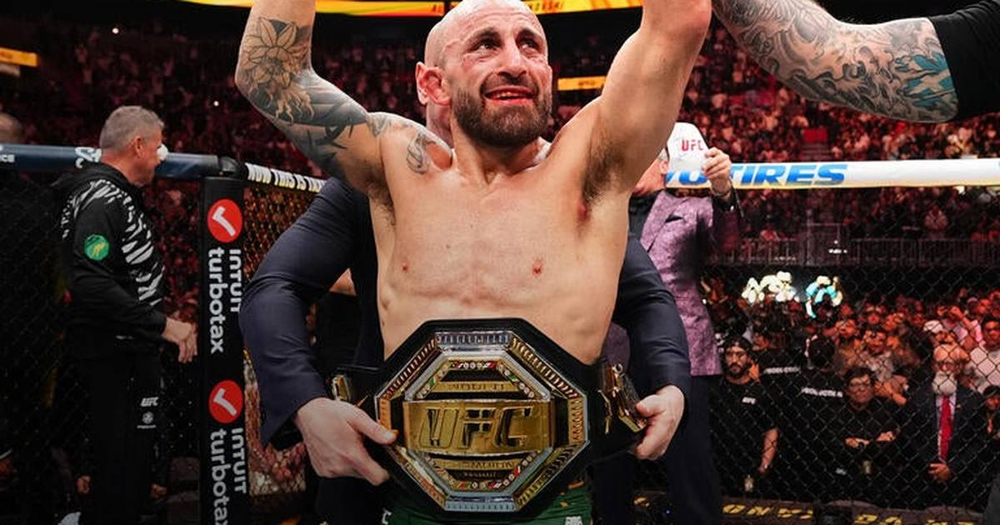

Volkanovski Stops Undefeated Evloev in Round 2 to Retain Featherweight Title at UFC 333
Alexander Volkanovski stopped previously unbeaten Movsar Evloev by TKO at 4:54 of the second round at UFC 333 in Abu Dhabi — his ninth UFC featherweight title-fight win, tying Jose Aldo's division record — and he did it while fighting through the flu.

Alexander Volkanovski is still the featherweight king. The 38-year-old Australian stopped previously undefeated Movsar Evloev by TKO at 4:54 of the second round in the UFC 333 main event at Etihad Arena in Abu Dhabi, retaining his featherweight championship (UFC).
How it ended
Evloev entered 20-0 and got the fight to the ground in the first round, but he couldn't turn those takedowns into sustained control. Volkanovski kept finding his feet and kept finding openings with his hands, even after developing swelling and a cut beneath his left eye.
The finish came late in the second. A right hand staggered Evloev, Volkanovski followed with a barrage that put the challenger on the canvas covering up, and the referee stepped in with just six seconds left in the round.
Evloev falls to 20-1 and loses for the first time in 11 UFC appearances. Volkanovski improves to 29-4 overall and 16-3 in the UFC.
The flu game
Volkanovski didn't just beat an undefeated challenger — he did it sick. He fought through flu symptoms all week, and confirmed after the fight that he refused to take medicine because he didn't want to gain an unfair advantage over Evloev (MMA Mania).
"It's all good, it's a part of the game," Volkanovski said. "No matter what hurdles are in front of me, this sh-t excites me."
What it means
The win is Volkanovski's ninth UFC featherweight title-fight victory, tying Jose Aldo for the most in division history. Already the oldest fighter to win and defend the featherweight championship, he extended his second reign atop the division — all six of his UFC stoppage wins have come by knockout or technical knockout.
"He's a great fighter and undefeated for a reason," Volkanovski said of Evloev. "But I said I'm the fight guy for that job." On the finish: "It feels good to get a finish. I promised the missus a quick one so she wasn't stressing on the sidelines."
Evloev was gracious in defeat: "He's a legend."
Rest of the UFC 333 main card
The co-main event delivered too. Petr Yan defended the bantamweight title with a unanimous decision over Merab Dvalishvili (48-47 on all three cards) — the third fight of their trilogy, and Yan's second win in three meetings. Dvalishvili won the first bout in 2023; Yan took the rematch last year.
Elsewhere on the main card, Aaron Pico stopped Losene Keita by TKO at 1:14 of round one, Alexander Volkov took a unanimous decision over Rizvan Kuniev, and Lone'er Kavanagh stopped Ramazan Temirov by TKO at 4:28 of round one (UFC).
Sources: UFC, USA Today, GiveMeSport.
Gear up: Fanatics